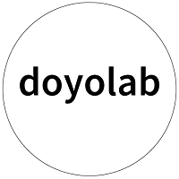
夏合宿2020 オンライン
夏合宿で学んだことをスケジュールとともに振り返る！
＜1日目＞デザインシンキング
私はブライダル班だったのでブライダルについてのデザインシンキングをした。スプレッドシート
★デザインリサーチとマーケティングリサーチの違い
・分化、習慣理解/言動をお推測する
・特殊、マイノリティを受け入れる/特殊、特別を避ける
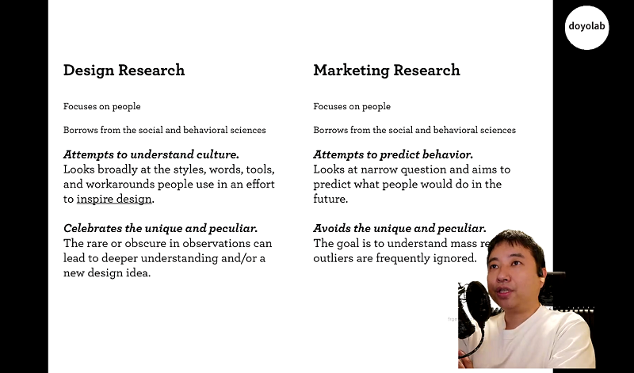
★デザインシンキングの流れ
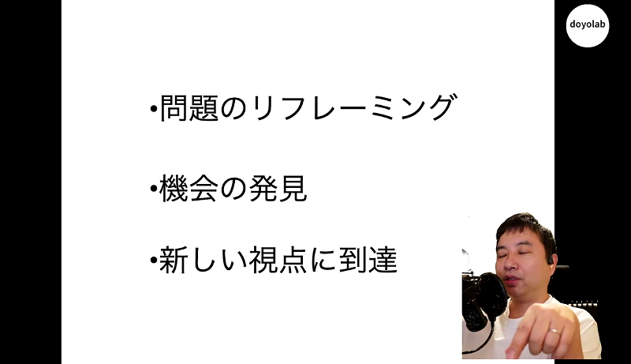
★インタビューのポイント：直接的に質問するのではなく、普段の生活に関する会話から相手の性格や心の底にあるモノを引き出すように、そして相手に共感しながら心理を読み取る
【①インタビュー結果を事実と感情に分ける】
事実が多くなりがちだが、そこから”相手がどのように感じた”を大切にする
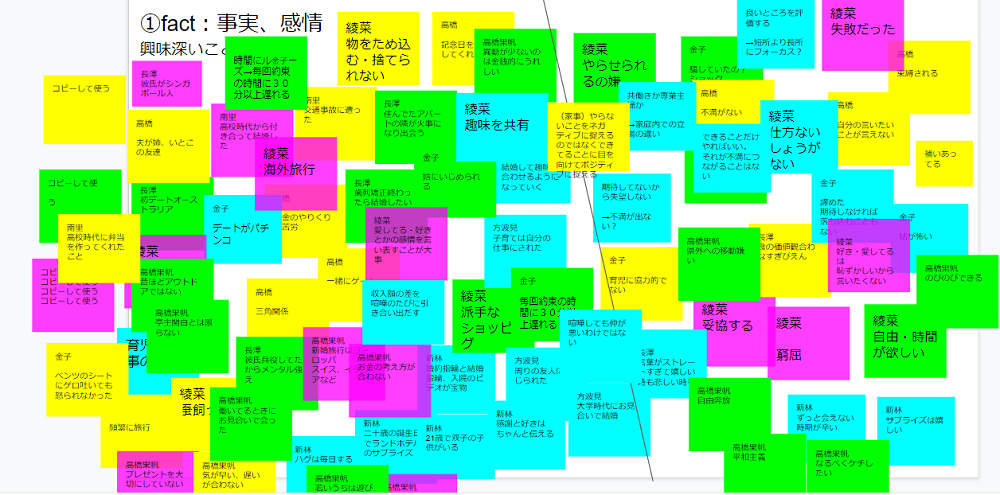
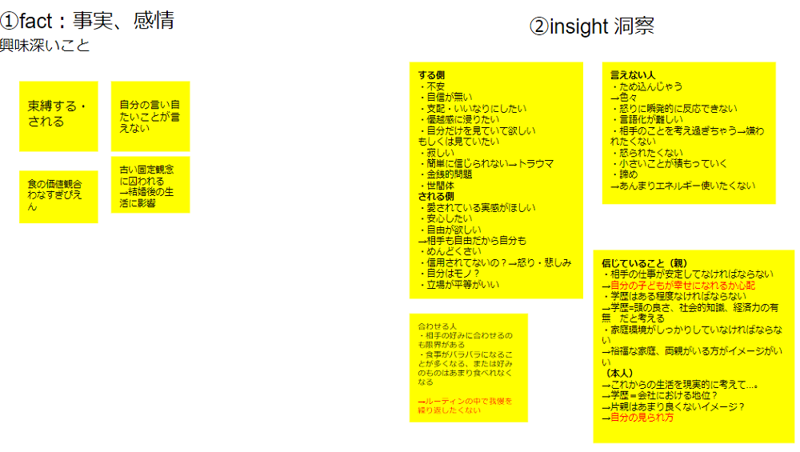
【②事実、感情を洞察していく】
事実、感情から相手が何を信じているのか（何が良い・悪いと思っているのか）、相手は本当に何を望んでいるのか条件分けをしてその人になったつもりで洞察する※1相手の言動とは逆なことも考えて見る※2心底の感情を言語化（本当は～したい、されたい）といった隠れたニーズを探す
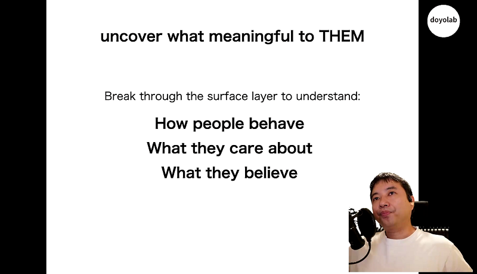
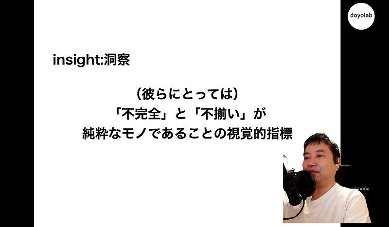
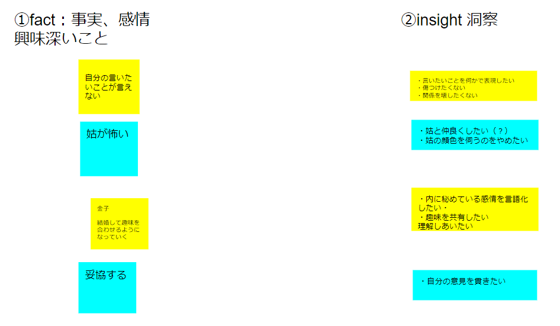
【③問題発見(POINT OF VIEW)の抽出】
②をまとめていき、隠れたニーズを具体化させる
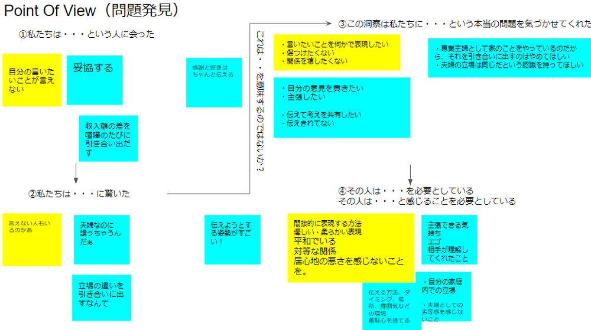
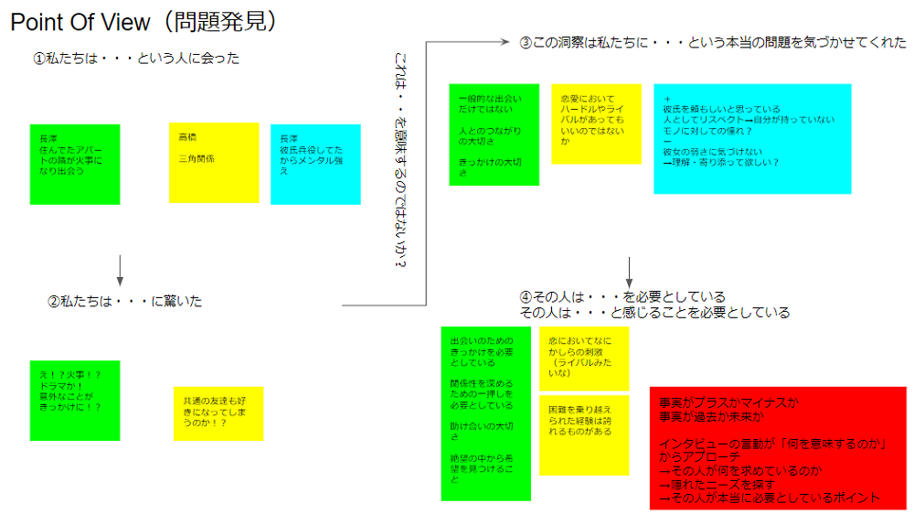
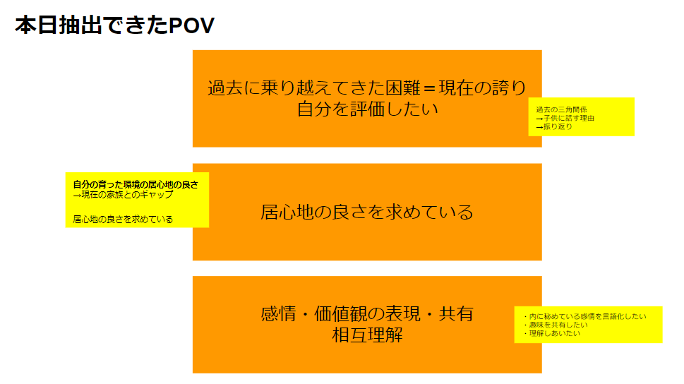
【④HMWの提案】
自分たちが（第三者として）相手の感情やニーズを満たすモノを考える※1自分や相手の意見を否定的（自由な発想、頭を柔らかくして）に考えず、良いと思ったモノをどんどん書いていく※2逆説的に”どうしたら～を満たさないようにできるか”を考えてみる※3誰かの意見に乗っかって発展させたりするのもアリ
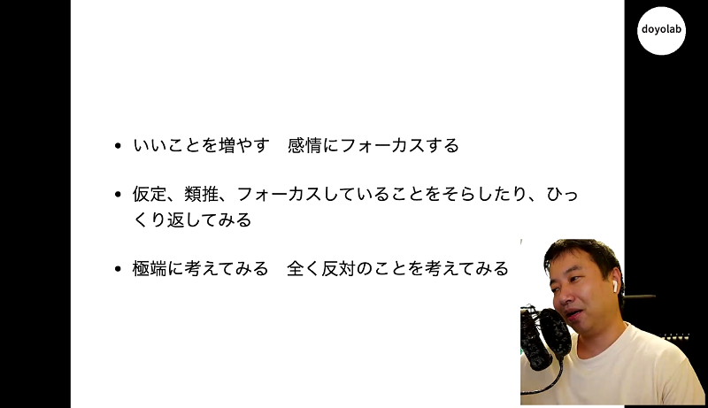
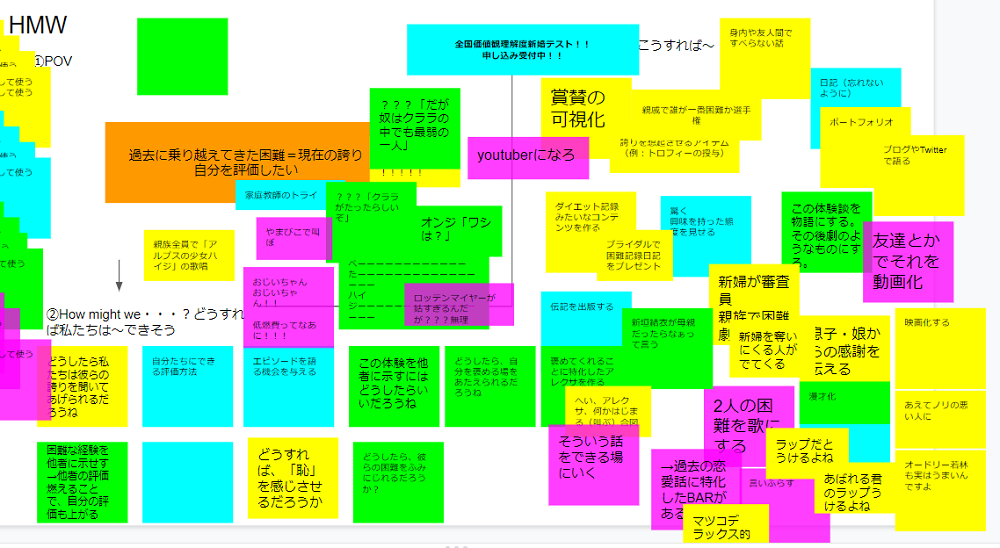
【⑤最終提案】
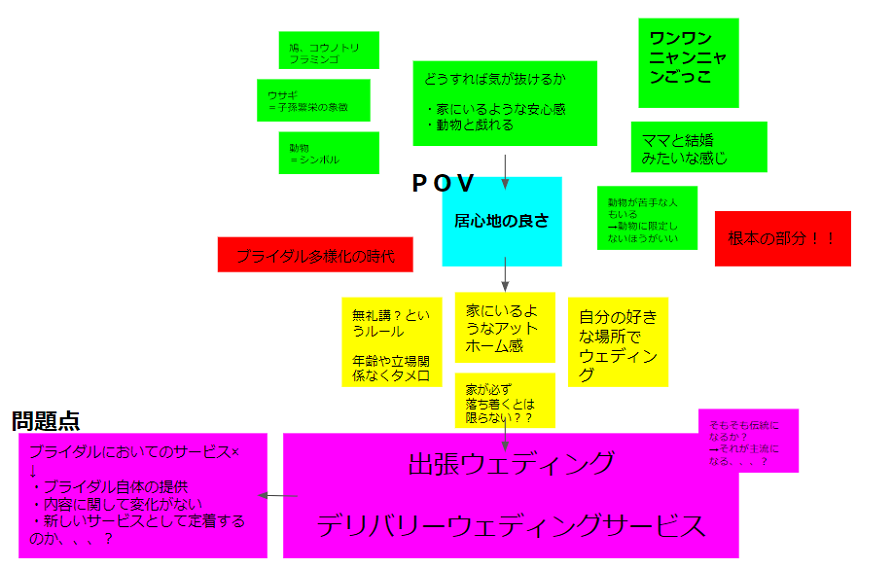
＜2日目＞プログラミング
Pycharmを使ってセンサーが読み取る値を先生が作ったIoTデータツールでグラフ化した。目に見えて値がわかってけっこう面白かった。ちなみに私は超音波物理距離センサー。サービスの提案では、光センサーとこの物理距離センサーを使ったアナログな形のゲームを提案した。考案過程で忘れがちだが、サービスにおいてセンサーを読み取るというIoTの特徴を活かすことが大事だと思った。
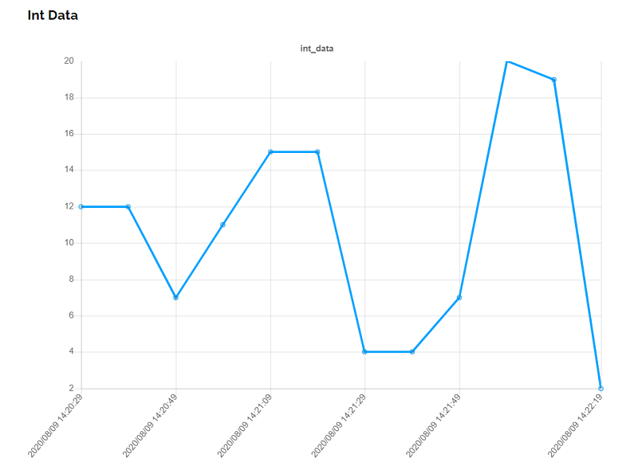
＜その他まとめ＞
★ユーザーエクスペリエンス：商品を買った人、体験した人にどのような体験をさせられるか